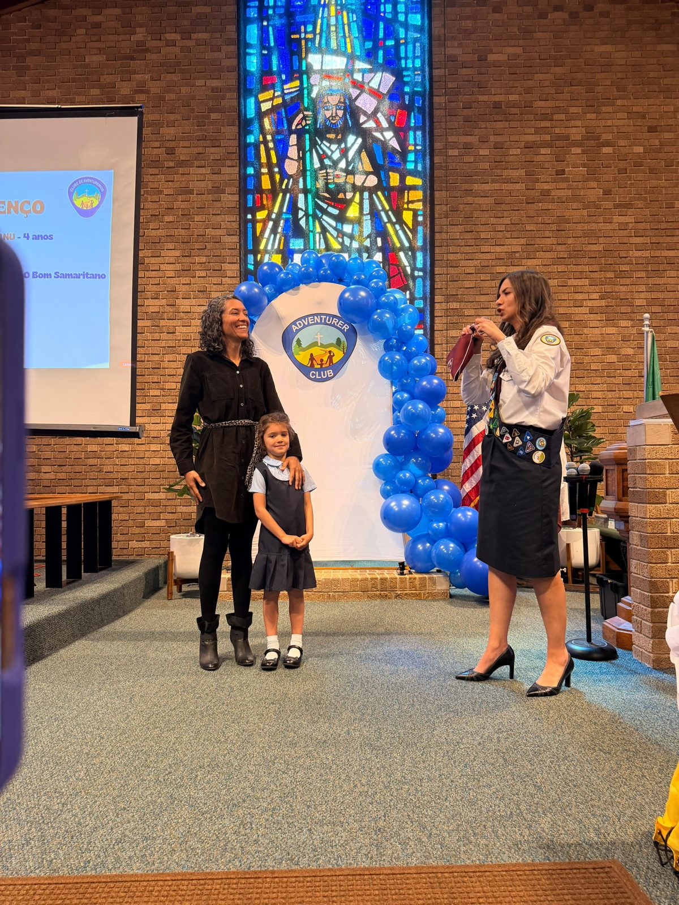

O que ensinamos
Mais do que uma atividade de sábado, o clube é um programa de formação. Cada encontro trabalha, de forma prática e adequada à idade, princípios que a criança leva para a vida toda.

Nossa turma aprendendo junta, ao ar livre, com a camisa do clube.
Princípios e valores
Respeito, honestidade, responsabilidade, bondade e cuidado com o outro. A criança aprende fazendo, não só ouvindo.
Educação e conhecimento
Natureza, saúde, segurança, arte, música, culinária e leitura do mundo ao redor, através das especialidades do programa.
Confiança e autonomia
Pequenas conquistas, insígnias na faixa e apresentação em público, que constroem autoestima e segurança.
Família e comunidade
Os pais participam, as famílias se conhecem e a criança cresce cercada por bons exemplos, em português e inglês.
O que fazemos — aprender brincando
Um programa completo, organizado em quatro áreas, que se repetem ao longo do ano com novas especialidades a cada encontro. Tudo com cor, movimento e alegria de criança.

My God
Histórias, valores e fé na prática, com o voto, a lei e o hino do clube, em português e inglês.

My Family
Ajudar em casa, cuidar de animais, segurança no trânsito e na família, e convivência saudável.

My World
Natureza, insetos, animais, estações do ano, gentileza e cuidado com o mundo ao redor.

My Self
Alimentação saudável, conhecer o próprio corpo, música, arte, culinária e habilidades do dia a dia.
Encontros no calendário, a cada duas semanas, com investidura em maio e acampamento anual. Ver todas as datas.
Conheça o clube
Uniforme, lenço oficial, faixa de especialidades, professoras dedicadas e uma turma por idade, de 4 a 9 anos. Um ambiente seguro, alegre e bem organizado, onde cada criança é conhecida pelo nome e cada família faz parte.
A safe, joyful, well-organized club where every child is known by name and every family belongs.
Conhecer o clube Descubra a classeFale com a gente
Tem dúvida sobre idade, classe, uniforme ou visita? A diretora Tânia e a equipe respondem pelo WhatsApp, antes do próximo encontro. É só chamar e dizer a idade do seu filho — a gente indica a classe certa.
Questions about age, class, uniform or a visit? Message us on WhatsApp and we will point you to the right class.
Falar com a genteMais fotos

Mais fotos na página Sobre.